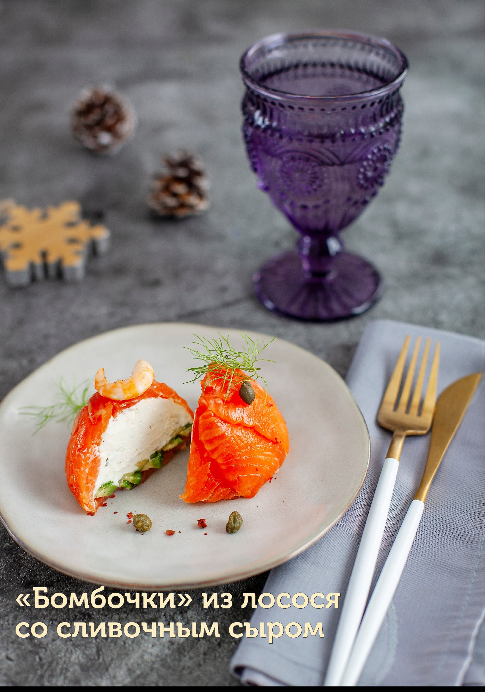
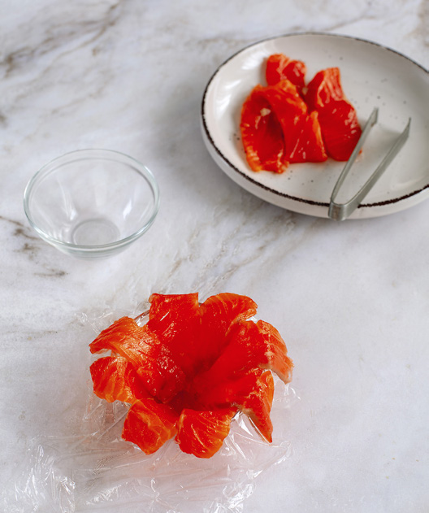
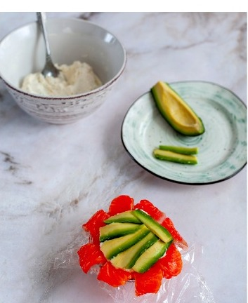
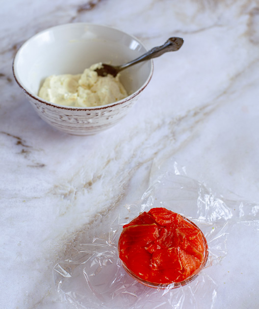
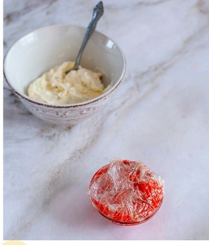
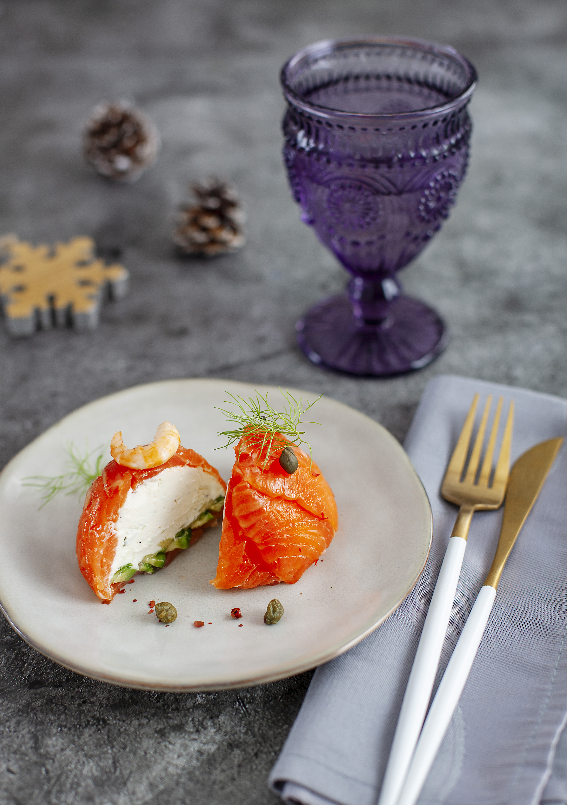

Этот рецепт — базовый, с ним можно смело экспериментировать: например, креветки положить не сверху, а внутрь (как сюрприз), или выложить начинку слоями (немного сыра, ломтики авокадо, тонкие ломтики рыбы или креветки). В начинку к авокадо можно также добавить мясо краба или икру.
Креветки лучше выбирать северные, у них нежнее текстура и приятнее вкус, они отлично сочетаются с укропом и другой зеленью. Но если нет такой возможности, подойдут любые другие качественные, достаточно крупные.
Для нарезки лосося потребуется острый нож. Если не уверены, что сможете нарезать достаточно тонко, положите филе на полчаса в морозилку, будет намного легче. Можно использовать уже готовую тонкую нарезку, но тогда лучше выбирать такие ломтики, где меньше тёмного цвета (кусочки около кожи), либо взять с запасом, чтобы их можно было отрезать.
Для формирования закуски следует использовать маленькие пиалы (диаметром максимум 8 см), формочки для маффинов/капкейков или маленькие чашечки для чая. Другой вариант: выложить всё в салатник слоями и нарезать порциями, как торт (хотя это будут уже не «бомбочки»).
При подаче «бомбочки» можно дополнительно выложить на слой уложенных слегка внахлёст тонких кружочков огурца.
Приготовление заранее: закуску можно приготовить накануне и хранить в холодильнике.

Поверх лосося выложить сырную массу (визуально поделив её сначала на 4 равные части), чуть не доходя до края,

следом выложить ломтики авокадо в один слой — вплотную или чуть внахлёст,

затем закрыть начинку свисающими краями рыбы, накрыть свисающими краями пищевой плёнки, слегка надавить, чтобы уплотнить начинку.

